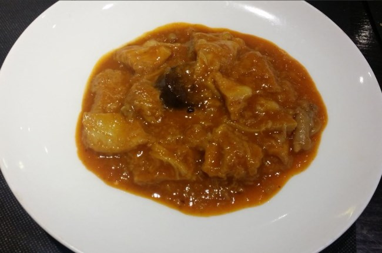
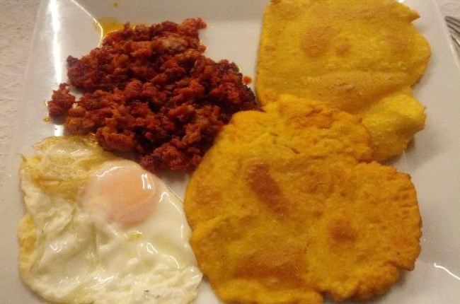
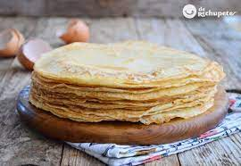

Cachopos asturianos

El cachopo consiste en dos filetes de ternera entre los cuales se pone un relleno de jamón y queso. Seguidamente se empana todo junto con huevo y pan rallado y se fríe. Se come frecuentemente acompañado de una guarnición de patatas fritas, ensalada, pimientos o cualquier otro producto adecuado.
Puedes consutar más información sobre cachopos aquí
Pitu caleya

Pitu de Caleya es el nombre que le dan en la comunidad asturiana a los pollos que se alimentan de productos naturales que encuentran en las mismas granjas, como cereales, semillas, insectos y otros. Este tipo de alimentación excluye el pienso, y permite que el pollo sea más grande, pudiendo alcanzar hasta los 6 kilos de peso. El pitu de caleya se caracteriza por tener menos grasa que el resto, y su carne es más dura. Se suele preparar en guisos.
Puedes consutar más información sobre pitu caleya aquí
Fabada asturiana

La fabada es sin duda el plato típico asturiano por excelencia. Se trata de un cocido hecho con “fabes”, una variedad de judías blancas y de gran tamaño, a las cuales se añaden otros ingredientes como chorizo, cerdo y morcilla asturiana.
Puedes consutar más información sobre fabada asturiana aquí
Chorizo a la sidra

El chorizo a la sidra es una receta muy popular en la comunidad asturiana. Se suele tomar en tapas, y su elaboración es muy fácil.
Se trata simplemente de cocer los chorizos, cubiertos de sidra, en una cazuela, en la que añadiremos también un par de hojas de laurel. Se deja cocer media hora y seguidamente se sirve el chorizo, cortado a rodajas, en un plato, regándolo con la salsa.
Puedes consutar más información sobre chorizo a la sidra aquí
Escalopines al cabrales

Los escalopines al cabrales son pequeños filetes de ternera pasados por huevo y pan rallado, y seguidamente fritos en abundante aceite. Se acompañan con patatas fritas y salsa de cabrales, que se elabora con nata y queso de dicha variedad.
Puedes consutar más información sobre escalopines al cabrales aquí
Callos

Los callos a la asturiana constituyen, junto a la fabada, una de las más típicas recetas de la comunidad asturiana. La receta incluye, además de los callos, chorizo, jamón, morro de ternera, laurel, pimentón, cebolla y ajos.
Puedes consutar más información sobre callos aquí
Tortos co picadillo

Los Tortos de maíz es otro plato tradicional de la cocina asturiana. Para su elaboración se emplea harina de maíz para hacer los tortos que posteriormente se fríen en aceite caliente por los dos lados. Se suelen acompañar de picadillo y huevo.
Puedes consutar más información sobre tortos con picadillo aquí
Frisuelos

Receta de frixuelos asturianos. Siempre me ha llamado la atención la gran diversidad, culinariamente hablando, de nuestro país. Y en especial del norte, Asturias como una de las comunidades donde se mima el producto que se cocina. Estemos en la comunidad autónoma que estemos, nos encontraremos con un repertorio gastronómico propio extenso y variado para cualquier época del año. Pero la verdad es que pese a la gran diversidad, existen muchos puntos en común entre muchas de las recetas de postres clásicas, lo cual me lleva a pensar que muchas veces nos parecemos más de lo que nos diferenciamos.
Puedes consutar más información sobre frisuelos aquí